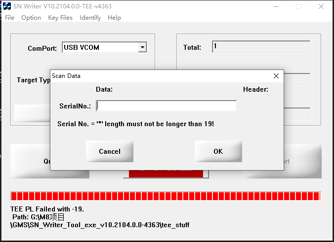
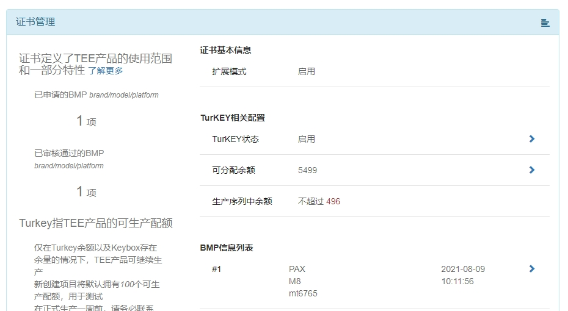

概述
由于M5x项目的key用完了，只能用M8的key。
实验过程
万鑫提供M5x的key下载地址如下：
url=http://192.168.199.3:8446/vturkey 巴西
url=http://172.20.62.11:8446/vturkey 巴西tectoy
url=http://192.168.0.232:8446/vturkey 深圳
url=http://192.168.6.100:8446/vturkey 国内工厂
鸿祥源提供的uuid：
eea:
url=http://116.62.230.138/vturkey
keybox_uuid=6109_8711b2129be4a728ad78b37ac59b8b3e3292c535c9813fe228456bbc7f54fe0e
非eea：
url=http://116.62.230.138/vturkey
keybox_uuid=6109_a96ab590b693bc1dae449b1ca25299fe5bbcd025f92644453f5c60f2f1f32073
发现在公司只有深圳的地址能ping通，尝试使用深圳的进行下载，报错提示如下：

SN tool出错打印：
[09 25 11:08:15][ERR]<__kpha_init>: Device production processing failed with -19
[09 25 11:08:15][ERR]<KPHA_Init2>: __kpha_init failed with kr = -19
[09 25 14:12:31][INFO]<__kpha_init>: KPH: Begin. 4363
[09 25 14:12:31][INFO]<__kpha_init>: Load Config from "G:\M8项目\GMS\SN_Writer_Tool_exe_v10.2104.0.0-4363\tee_stuff\kph_in\kph_env.ini" OK.
[09 25 14:12:31][INFO]<kpha_detect_server_mode>: version: 3.4.1
[09 25 14:12:31][INFO]<__kpha_init>: META Version: 3.4.1
[09 25 14:12:32][INFO]<get_cert_name>: certname: xxx_M8_mt6765.dat
[09 25 14:12:32][WARN]<local_read>: fopen(G:\M8项目\GMS\SN_Writer_Tool_exe_v10.2104.0.0-4363\tee_stuff\kph_in\xxx_M8_mt6765.dat) failed: No such file or directory
[09 25 14:12:32][WARN]<__kpha_init>: xxx_M8_mt6765.dat not exist, certname_len : 17
[09 25 14:12:32][INFO]<__kpha_init>: KPH: DEVICE [SN: <7CC02E0500000000> CHIPID: <b52f26ad4fba5f1ac44b7c01564c13b6>] start
[09 25 14:12:32][INFO]<__kpha_init>: __kpha_init device_status version 2 >= 2, use truststore API to get truststore type
[09 25 14:12:32][INFO]<__kpha_init>: TRUSTSTORE_TYPE: 4 TRUSTSTORE_status: 1
[09 25 14:12:32][INFO]<__kpha_init>: CFG already imported. Done
[09 25 14:12:32][INFO]<__kpha_init>: Export Device Info. Done
[09 25 14:12:32][INFO]<__kpha_init>: Export Key<0>. Done
[09 25 14:12:32][INFO]<__kpha_init>: Read Output. Done
[09 25 14:12:32][NOTICE]<__kpha_init>: KPH: DEVICE [SN: <7CC02E0500000000> CHIPID: <b52f26ad4fba5f1ac44b7c01564c13b6>] Complete.
[09 25 14:12:32][INFO]<__kpha_init>: Program Secondary certificate.
[09 25 14:12:32][INFO]<trustkernel::VTurkeyLicenser::secondaryCertRequest>: device={"deviceInfo":{"androidVersion":"30","ekPubkey":"-----BEGIN PUBLIC KEY-----\nMIIBIjANBgkqhkiG9w0BAQEFAAOCAQ8AMIIBCgKCAQEArL6O4oSO9Sab8nHENf2X\ncLcLrGZ/moc387Rul8RzZmGouiGpJ5HfNRvnCIs+7jcCNKi5wNgPjMTfpCYyhi+S\noRktqFKYw9LDbc95xty3NvEye9Q/iZdHZiea2u9qhNulZnulXBTZ7x457Giem5YT\ndrFxZZxcUanAl0ikMMUSkaOTeA5cofctkKOr/fpizvfjbNQ0YVdVdeWFM8Mup2aO\n13afxB3THV70iFPTeXoi1WdgFVQQCE0aeidelWprh40q0whIujMzvSHXxb+ZrSPW\nHy+84KZ/BMbRx+c0bOai4bFLHHIuQ5ivt3kpM5w6z22x23YVtHjot/bxFvTMkhDt\nUwIDAQAB\n-----END PUBLIC KEY-----","reeUuid":"b52f26ad4fba5f1ac44b7c01564c13b6","teeOsVersion":"v0.9.9","teeOsVersionAll":"v0.9.9-gp-35-g17b24987-mt6765-pie-mo-kme-fp-mtk-release","teeUuid":"3d38e45cb3311058b17d64ceabcdf9a4"},"turkey":{"digest":"57b603755edbeee2cf65ed80f5898748b2124bde28815e6366912673978e20eb","keyId":1,"keyboxUuid":"5978_7f5b1cee659bae688335723e0ffc893e2ad9a59eefa13eed77ae81ebffc7a553","nonce":899613900,"requireKeybox":true}}
[09 25 14:12:33][ERR]<trustkernel::VTurkeyLicenser::secondaryCertRequest>: post VTurkey secondary cert failed with 105(Credit used up锛屼骇绾夸綑棰濅笉瓒筹紝璇锋鏌SS涓婂搴旈」鐩殑鍙垎閰嶄綑棰?
[09 25 14:12:33][ERR]<trustkernel::VTurkeyLicenser::issueSecondaryLicense>: Upload failed with -1
[09 25 14:12:33][ERR]<__kpha_init>: Device production processing failed with -19
[09 25 14:12:33][ERR]<KPHA_Init2>: __kpha_init failed with kr = -19
PPQ工具报错一样，如下：
11:33:22> [09 25 11:32:58][ERR]<KPHA_Init2>: __kpha_init failed with kr = -19
11:33:22> [09 25 11:32:58][ERR]<__kpha_init>: Device production processing failed with -19
11:33:22> [09 25 11:32:58][ERR]<trustkernel::VTurkeyLicenser::issueSecondaryLicense>: Upload failed with -1
11:33:22> [09 25 11:32:58][ERR]<trustkernel::VTurkeyLicenser::secondaryCertRequest>: post VTurkey secondary cert failed with 100(Invalid keybox uuid锛岄潪娉曠殑keyboxUuid,璇锋牎楠宬eyboxUuid鏄惁姝ｇ‘)
11:33:22> [09 25 11:32:57][INFO]<trustkernel::VTurkeyLicenser::secondaryCertRequest>: device={"deviceInfo":{"androidVersion":"30","ekPubkey":"-----BEGIN PUBLIC KEY-----\nMIIBIjANBgkqhkiG9w0BAQEFAAOCAQ8AMIIBCgKCAQEArL6O4oSO9Sab8nHENf2X\ncLcLrGZ/moc387Rul8RzZmGouiGpJ5HfNRvnCIs+7jcCNKi5wNgPjMTfpCYyhi+S\noRktqFKYw9LDbc95xty3NvEye9Q/iZdHZiea2u9qhNulZnulXBTZ7x457Giem5YT\ndrFxZZxcUanAl0ikMMUSkaOTeA5cofctkKOr/fpizvfjbNQ0YVdVdeWFM8Mup2aO\n13afxB3THV70iFPTeXoi1WdgFVQQCE0aeidelWprh40q0whIujMzvSHXxb+ZrSPW\nHy+84KZ/BMbRx+c0bOai4bFLHHIuQ5ivt3kpM5w6z22x23YVtHjot/bxFvTMkhDt\nUwIDAQAB\n-----END PUBLIC KEY-----","reeUuid":"b52f26ad4fba5f1ac44b7c01564c13b6","teeOsVersion":"v0.9.9","teeOsVersionAll":"v0.9.9-gp-35-g17b24987-mt6765-pie-mo-kme-fp-mtk-release","teeUuid":"3d38e45cb3311058b17d64ceabcdf9a4"},"turkey":{"digest":"57b603755edbeee2cf65ed80f5898748b2124bde28815e6366912673978e20eb","keyId":1,"keyboxUuid":"6109_a96ab590b693bc1dae449b1ca25299fe5bbcd025f92644453f5c60f2f1f32073","nonce":2198996757,"requireKeybox":true}}
11:33:22> [09 25 11:32:57][INFO]<__kpha_init>: Program Secondary certificate.
11:33:22> [09 25 11:32:57][NOTICE]<__kpha_init>: KPH: DEVICE [SN: <7CC02E0500000000> CHIPID: <b52f26ad4fba5f1ac44b7c01564c13b6>] Complete.
11:33:22> [09 25 11:32:57][INFO]<__kpha_init>: Read Output. Done
11:33:22> [09 25 11:32:57][INFO]<__kpha_init>: Export Key<0>. Done
11:33:22> [09 25 11:32:57][INFO]<__kpha_init>: Export Device Info. Done
11:33:22> [09 25 11:32:57][INFO]<__kpha_init>: CFG already imported. Done
11:33:22> [09 25 11:32:57][INFO]<__kpha_init>: TRUSTSTORE_TYPE: 4 TRUSTSTORE_status: 1
11:33:22> [09 25 11:32:57][INFO]<__kpha_init>: __kpha_init device_status version 2 >= 2, use truststore API to get truststore type
11:33:22> [09 25 11:32:57][INFO]<__kpha_init>: KPH: DEVICE [SN: <7CC02E0500000000> CHIPID: <b52f26ad4fba5f1ac44b7c01564c13b6>] start
11:33:22> [09 25 11:32:57][WARN]<__kpha_init>: xxx_M8_mt6765.dat not exist, certname_len : 17
11:33:22> [09 25 11:32:57][WARN]<local_read>: fopen(G:\PPQ_MP_M5x_20210826\bin\MTK\MTKSNWriter\tee_stuff\kph_in\xxx_M8_mt6765.dat) failed: No such file or directory
11:33:22> [09 25 11:32:57][INFO]<get_cert_name>: certname: xxx_M8_mt6765.dat
11:33:22> [09 25 11:32:56][INFO]<__kpha_init>: META Version: 3.4.1
11:33:22> [09 25 11:32:56][INFO]<kpha_detect_server_mode>: version: 3.4.1
11:33:22> [09 25 11:32:56][INFO]<__kpha_init>: Load Config from "G:\PPQ_MP_M5x_20210826\bin\MTK\MTKSNWriter\tee_stuff\kph_in\kph_env.ini" OK.
11:33:22> [09 25 11:32:56][INFO]<__kpha_init>: KPH: Begin. 4363
11:33:21>setkeybox=0%
11:33:21>setkeybox
第二次写号实验
上次实验失败是因为服务器地址及uuid不对，以及必须使用user版本进行验证。今天的实验情况如下：
1.杨文亚提供M8非EEA的key下载地址和uuid如下，该地址可以进行googlekey下载及激活：
url=https://pl.trustkernel.com/vturkey
keybox_uuid=6109_bafc4363713178c1b2a24b04cf64d84a93e516c2da014de8017ec251c765cd3c
2.https://oss.trustkernel.com/官网查询M8非EEA的key剩余数量为5995个：

3.兼容方案目前还在验证中，思路如下： （1）公钥文件兼容：公钥文件存在于文件系统中，机型通过boardid区分，在开机时判断，新老机器文件系统中拷贝不同的公钥文件。 （2）证书文件兼容：证书文件存在于tee分区，tee分区只在工厂第一次烧录时进行，后续发布的OTA及Uniphiz包都不包含该镜像，防止老机器证书被覆盖。
4.如沟通，老产品兼容方案目前基本能够实验，存在以下两个缺点： （1）新机器需要修改硬件boardid，和旧机器进行区分。 （2）新机器无法回退以前的软件，否则会覆盖公钥文件。